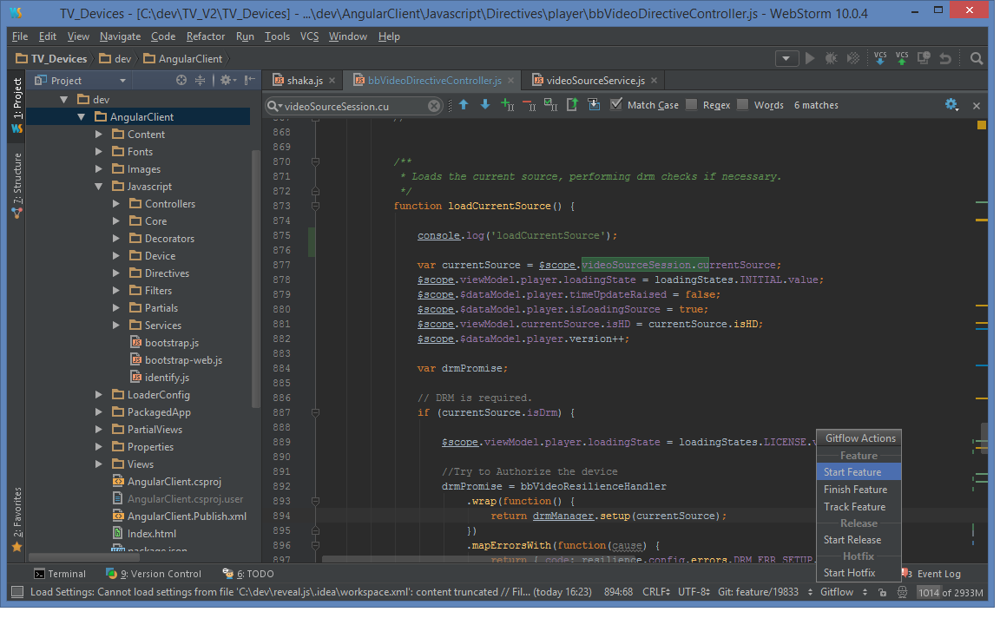
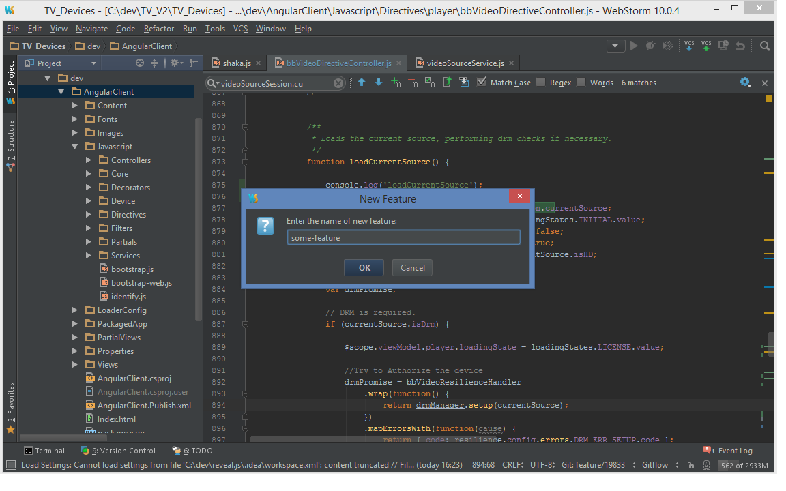
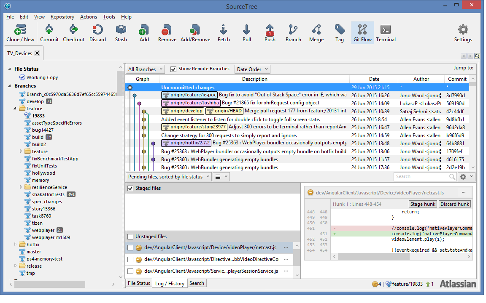
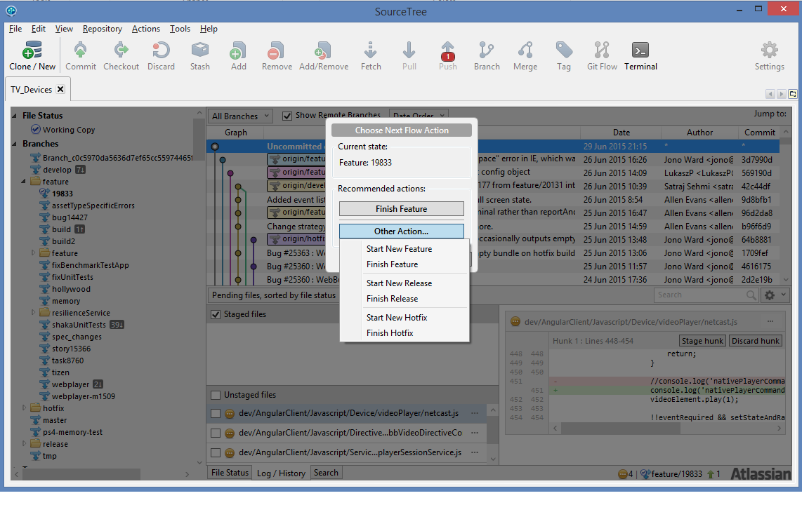
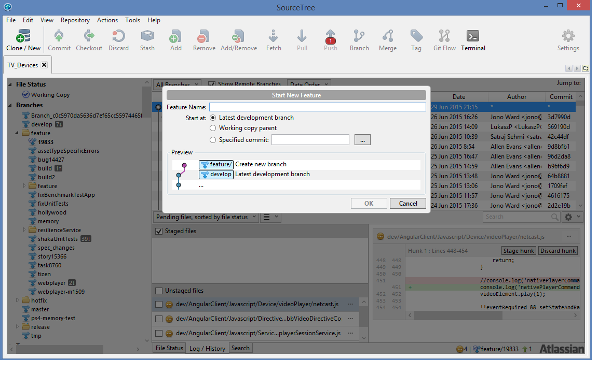

Git Flow
Topics
- “Ideal World” branching model (Gitflow)
- Git commands for branching / merging
- The tools available to ease the process
- Problems and complexities
Gitflow

The Core Branches

Feature Branches

Release Branches

Hotfix Branches

Gitflow Commands
git pull checkout branch commit merge push
Feature Branch - Create & Commit

git checkout -b feature/some-feature develop
git commit ***
git checkout -b feature/some-other-feature develop
git commit ***
Feature Branch - Close

git pull origin develop
git checkout develop
git merge --no-ff feature/some-feature
git push
git branch -d feature/some-feature
Release Branch - Create & Commit

git checkout -b release/1.0 develop
git commit ***
Release Branch - Close

git checkout master
git merge --no-ff release/1.0
git push
git checkout develop
git merge --no-ff release/1.0
git push
git branch -d release/1.0
Release Branch - Close
git tag -a 1.0 master
git push --tags
Hotfix Branch - Create & Commit

git checkout -b hotfix/1.0.1 master
git commit ***
Hotfix Branch - Close
git checkout master
git merge --no-ff hotfix/1.0.1
git push
git checkout develop
git merge --no-ff hotfix/1.0.1
git push
git branch -d hotfix/1.0.1
Hotfix Branch - Close
git tag -a 1.0.1 master
git push --tags
Gitflow Tools
git-flow command line git extensionWebstorm Gitflow Plugin
SourceTree - built in Gitflow support
git-flow command line git extension
github.com/nvie/gitflow
git flow init [-d]
git flow feature
git flow feature start some-feature
git flow feature finish some-feature
git flow feature publish some-feature
git flow feature pull some-feature
git flow release
git flow release start 1.0
git flow release finish 1.0
git flow release publish 1.0
git flow release pull 1.0
git flow hotfix
git flow hotfix start 1.0.1
git flow hotfix finish 1.0.1
git flow hotfix publish 1.0.1
git flow hotfix pull 1.0.1
Webstorm Git Flow Plugin
github.com/OpherV/gitflow4idea/
Install from inside WebStorm
(File -> Settings -> Plugins -> Browse -> Repositories)
search for "git flow"
Webstorm Gitflow Plugin
Webstorm Gitflow Plugin
SourceTree
www.sourcetreeapp.comBuilt in support!
SourceTree
SourceTree
SourceTree
Problems and complexities
- Concurrent Releases
- Hot fixes for devices on old versions
- TFS Pull Requests don't support git flow